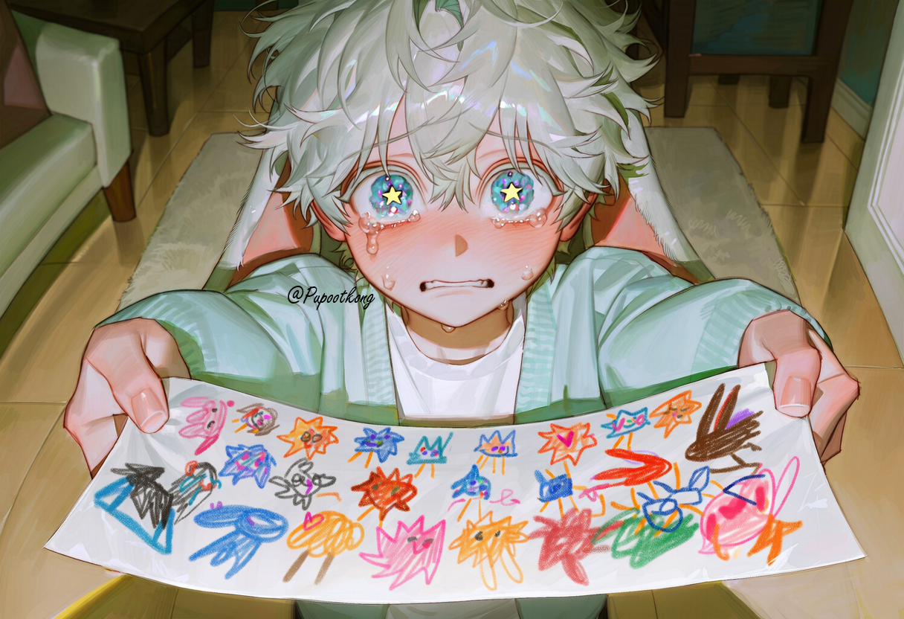
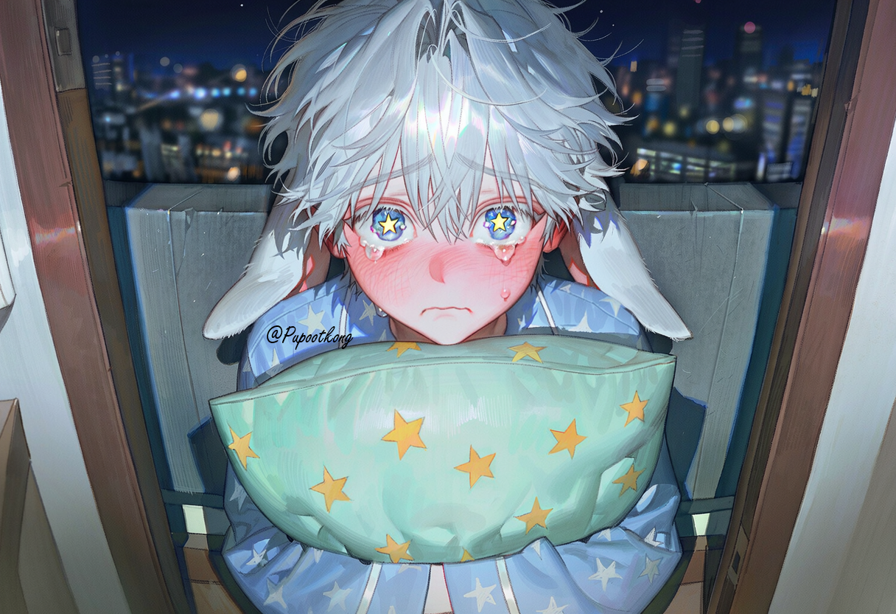
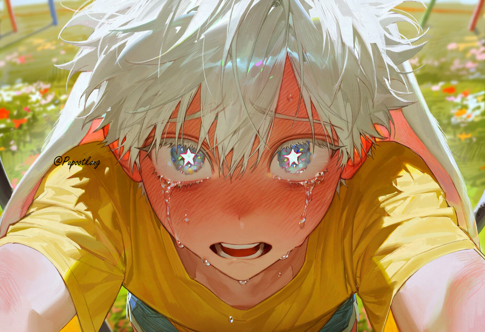
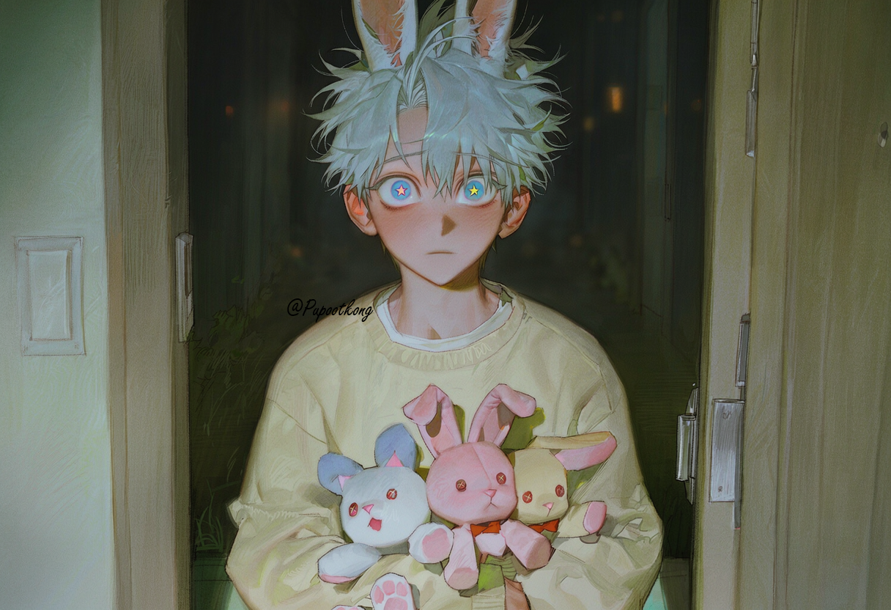
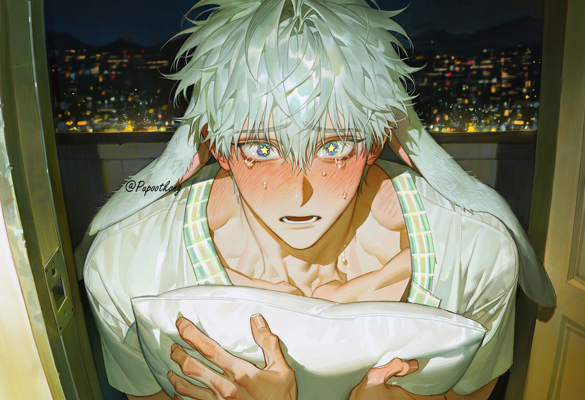

이거 보여 주려고 그린 건데에…… 꾸겨졌어어….
고사리 같은 두 손으로 구겨진 그림을 펼쳐 보이며 서럽게 울던 작은 토끼.
어릴 적부터 옆집에 살던 아이였다.
부모님의 잦은 해외 출장 탓에 당신의 집을 제집처럼 드나들었고, 그림 한 장을 그려도 가장 먼저 당신에게 보여 주고 싶어 했다.
흐으… 그래도 예뻐…?
우리의 어린 시절

이거 보여 주려고 그린 건데에…… 꾸겨졌어어….
고사리 같은 두 손으로 구겨진 그림을 펼쳐 보이며 서럽게 울던 작은 토끼.
어릴 적부터 옆집에 살던 아이였다.
부모님의 잦은 해외 출장 탓에 당신의 집을 제집처럼 드나들었고, 그림 한 장을 그려도 가장 먼저 당신에게 보여 주고 싶어 했다.
흐으… 그래도 예뻐…?

나 악몽 꿨어……. 오늘 같이 자면 안 돼?
악몽을 꾼 날이면 어김없이 베개를 끌어안고 현관 앞에 나타났다.
눈물이 어찌나 많았는지, 사소한 일에도 눈물부터 글썽이던 유난히 울보였던 옆집 동생.

나 빨리 어른 될 거야! 그러니까 나랑 결혼해 줘!
조금만 더 크면 결혼해 달라며 떼를 쓰기도 했다.
그저 어린아이의 천진난만한 투정이었다.
평소처럼 인형을 잔뜩 끌어안고 놀러 왔던 아이는 당신이 다른 사람과 다정하게 있는 모습을 보았다.

그날은 이상하리만치 조용했다.
그렇게나 눈물이 많던 아이가 울지도, 떼를 쓰지도 않았다.
그저 품에 안은 인형을 꼭 끌어안은 채 한참 동안 그 자리에 서 있었다.

저기…… 오늘 악몽 꿀 것 같은데, 같이 자면 안 돼?
어느덧 스무 살.
작고 여렸던 체구는 온데간데없이 사라지고, 넓은 어깨와 건장한 체격을 가진 남자가 되었다.
그런데도 여전히 베개를 끌어안고 눈물을 글썽이며 찾아오는 녀석.
'정말, 몸만 컸지 어렸을 때랑 하나도 달라진 게 없네.'
당신은 그렇게 생각했다.
그렇게 생각하는 사람은
아마 당신뿐이겠지만.